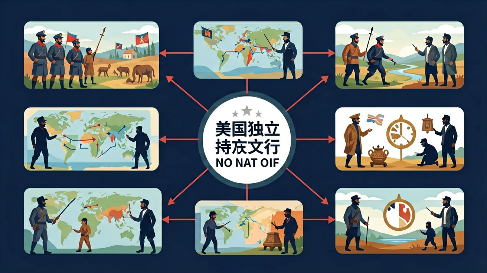

世界近代史：资本主义发展、社会主义运动和民族解放运动。

🎯 能说出英国征税与殖民地矛盾的3个具体事件
🎯 能判断独立战争转折点及关键战役
🎯 能分析《独立宣言》原则与现实矛盾的根源
❓ 为啥英国要收那么多税，美国人不交不行吗？
❓ 华盛顿打仗厉害吗，还是靠别人帮忙赢的？
❓ 独立宣言说的自由平等，当时黑人奴隶算不算？
学完这一课，这些问题你都能自信地回答。
引发波士顿倾茶事件的直接原因是？
独立战争期间法国援助美国的主要目的是？
美国独立战争是初中历史的重要内容。世界近代史：资本主义发展、社会主义运动和民族解放运动。
了解人类文化的多样性，理解和尊重世界各国、各民族的文化传统，认识中国历史与世界历史相互关联。
点击时代按钮切换世界格局；结合本课主题观察空间分布。
把卡片拖到核心概念 / 方法技能 / 应用情境 / 常见误区。
拖完 4 项后自动判分。
迁移任务：找一道与「美国独立战争」相关的练习题或生活情境，用本课方法完整解答一遍。
英属北美殖民地不满宗主国压迫，爆发独立战争。1776年《独立宣言》发表，1783年英国承认美国独立。1787年宪法确立联邦共和制度，美国走上资本主义发展道路。
战争解决独立问题，宪法解决国家结构与分权制衡。注意独立不等于废除奴隶制等局限。
常见误区：常见误区是只记华盛顿打仗，忽视文献与制度建设。
美国独立战争的性质是？
1. 现代抗议运动中的符号借用：2013年土耳其盖齐公园抗议中，示威者模仿波士顿倾茶事件，将警察防暴盾牌扔入喷泉并高呼"No taxation without representation"。这种跨时空的意象移植，展现了历史事件如何成为公民抗争的通用语言模板。
2. 军事物流系统的历史参照：美军在伊拉克战争期间的后勤研究，曾分析1778年大陆军福吉谷冬营的补给困境。当时1/3士兵因缺靴子赤脚行军，现代军队由此发展出"即时定位补给系统"，通过RFID标签追踪每双军靴的库存位置。
3. 政治漫画的视觉语法传承：当代讽刺画家仍沿用保尔·里维尔1770年《波士顿惨案》版画的构图逻辑——将英国红衫军排列成机械化的杀人方阵。2020年《纽约客》关于国会山事件的漫画中，抗议者被同样处理为无个性特征的暴力符号群。
1. 问题：若没有七年战争（1756-1763）的巨额军费压力，英国是否会调整对北美政策？分析线索：比较战前后英国国债数字（从7500万镑增至1.3亿镑），注意1763年《皇家公告线》禁止殖民者西进的政策动机，思考帝国财政体系与殖民地自治传统的根本矛盾是否必然爆发。
2. 问题：为何以奴隶制闻名的杰斐逊能在《独立宣言》中写入"人人生而平等"？分析线索：对比宣言初稿中删除的谴责奴隶制段落（因南卡罗来纳州反对），考察1776年弗吉尼亚州黑人占比（40%），思考启蒙思想与现实利益的博弈如何塑造革命话语的局限性。
先要理解18世纪中叶大英帝国的特殊治理结构：北美13殖民地虽缴纳关税（1764年《糖税法》将税率提高3倍），却在威斯敏斯特议会没有代表权。这种"虚拟代表制"理论遭遇殖民地精英的洛克式主权观挑战，当1765年《印花税法》要求所有法律文件加贴税票时，律师帕特里克·亨利在弗吉尼亚议会率先通过抵制决议。接着是螺旋上升的对抗循环——1770年波士顿惨案中5名市民死亡引发舆论沸腾，3年后东印度公司茶叶垄断权触发倾茶事件，英国议会随即通过《强制法案》关闭波士顿港。1774年第一届大陆会议召开时，12个殖民地（佐治亚缺席）代表已开始协调民兵组织，次年4月列克星敦的民兵"一分钟人"与英军交火时，其实双方都沿用了欧洲线性战术手册。最后阶段呈现全球化特征：法国拉法耶特侯爵1777年带来200名工程师帮助训练大陆军，西班牙在密西西比河牵制英军，而1781年约克镇决战时，法海军德格拉斯伯爵的28艘战舰切断了英军海上退路。战争结束时产生的1783年《巴黎和约》看似是终点，实则埋下新矛盾——英国保留加拿大导致后来1812年战争，而未解决的西部土地分配问题将持续撕裂年轻的美利坚。
你已经学过英国资产阶级革命，具备继续探索的底座；在日常生活中，你也早就接触过与「美国独立战争」相关的现象。
但当问题换了一个情境出现——需要你解释原因、做出判断或解决实际任务时，仅凭零散的旧知识就很容易卡住。
所以本课用一个贯穿的情境任务，带你把「美国独立战争」拆成可操作的步骤：先看懂它，再动手试，最后用练习和迁移把它变成自己的能力。
1. 错误认为"波士顿倾茶事件是战争直接导火索"：学生常将1773年倾茶事件与1775年列克星敦枪声直接关联，忽略中间《强制法案》和第一届大陆会议等关键过渡。根源在于线性思维简化因果链，实际上英国通过5项惩罚性法案激化矛盾，殖民地代表在1774年费城会议已形成联合抵抗体系，倾茶事件只是长期抗争中的标志性节点。
2. 混淆《独立宣言》与《邦联条例》功能：常见错误是将1776年杰斐逊起草的宣言等同于1781年生效的政府组织文件。认知偏差来自对"独立"与"建国"两个阶段的模糊，前者是理论纲领（含27条对英王控诉），后者是实践框架（保留各州主权导致13个独立财政体系），直到1787宪法才解决此矛盾。
3. 高估法国援助的决定性作用：学生容易将1781年约克镇围城战的法军支援视为胜败关键，实际上此前6年战争中，北美民兵的游击战术（如摩根步枪队在萨拉托加战役的丛林作战）和华盛顿的持久战略（大陆军仅2.5万人却周旋8年）才是根基。法军最后介入时，英军已因全球殖民地战线过长损耗了40%兵力。
复制提示词到 AI 学伴，生成「美国独立战争」的时间轴或事件提纲；也可以上传你手绘的示意图，请 AI 学伴点评。
复制后可粘贴到 AI 学伴继续对话。
关于《不可容忍法案》，下列哪项理解最准确？
分析《独立宣言》在美国独立战争中的历史意义及其对后世的影响
关于美国独立战争的学习，哪种做法最科学？
选一个并查看反馈。
先独立作答，再点选项查看对错与错因。
下列哪项是《不可容忍法案》的主要内容？
美国独立战争爆发的直接导火索是？
下列哪位人物是大陆军的总司令？
1776年7月4日，大陆会议通过了____，正式宣布北美13个殖民地脱离英国独立。
答案：《独立宣言》
《独立宣言》由托马斯·杰斐逊起草，标志着美国正式宣告独立
1777年的____战役是美国独立战争的转折点，促使法国正式承认美国独立并提供军事援助。
答案：萨拉托加
萨拉托加战役的胜利增强了法国对美国独立事业的信心，促使其加入战争
✅ 1787年宪法仍保留奴隶制，内战才废除
💡 混淆独立宣言理想与现实制度差异
✅ 该事件是导火索，两年后才爆发战争
💡 时间线记忆模糊
口诀：茶叶税，惹众怒，来克星顿第一枪，萨拉托加转折仗，约克镇后英国降
类比：像小区物业突然加收停车费，业主联合成立业委会换物业
（中考题）下列最能体现《独立宣言》局限性的是？
若用美国独立战争模式分析某地区独立运动，最需首先考察？
华盛顿在约克镇战役胜利主要依靠？
点击节点跳转到对应章节；可切换布局。